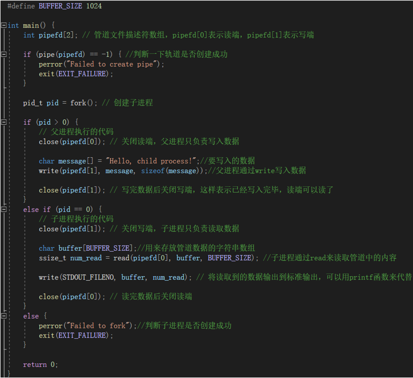

Linux 进程间通信
10-1 简介
在 Linux 下，进程之间相互独立，每个进程都有自己不同的用户地址空间。任何一个进程的全局变量在另 一个进程中都看不到，所以进程和进程之间不能相互访问。如果非要交换数据则必须通过内核，在内核中开辟 一块缓冲区。假设有两个进程 A B，他们之间想要交换数据就需要 A 在将数据写到缓冲区，然后 B 再从缓冲区 将 A 写入的数据读入，这样就完成了 AB 两个进程之间的通信。
进程间如果想通信则需要使用：文件，管道，信号，共享内存，消息队列，套接字，命名管道等。如今常 用的通信方式有：管道（操作简单），信号（开销小），共享映射区（适用无血缘关系的进程），本地套接字（最 稳定）。
10-2 管道 pipe
10-2-1 概念
在内核区创立一个缓冲区，它形似队列，一头输入数据，一头输出数据。它由两个文件描述符引用，当所 以引用它的进程都结束后，pipe 管道会自己消失，并且读入端和写入端是阻塞的。这个缓冲区的大小为 4k，不 可以修改它的大小，在实际的操作过程中，缓冲区会根据数据压力做适当的调整。
假设现在有 A,B 两个线程，我们让 A 线程在队头读数据，让 B 线程在队尾写数据，这样就可以完成 AB 两个线程的通信，但是管道的数据走向是单向的，上面的例子是 A 接收 B 的数据，如果想要 B 接收 A 的数 据则需要再来一个管道。当然可以两个及以上个进程共享同一个管道，但当多个进程都要往管道中写入数据 或者读出数据时，则会导致读写次序混乱，所以可以使用互斥锁，或者信号量来解决该问题。
如果 B 线程往管道中写入了数据，那么 A 线程可以通过读取操作将数据取出。在 A 线程成功读取数据后， 管道中的数据并不会自动删除，仍然保留在缓冲区中，可以继续进行读取操作以重复获取数据。因此，管道中 的数据是可以反复读取的。并且只有有血缘关系的进程才能使用管道。
在 pipe 管道中，如果管道中没有数据可读时，那则会阻塞读端，如果缓冲区满了则会阻 塞写端。
10-2-2 创建管道 pipe 函数
函数原型： int pipe(int fd[2]);
头文件：#include <unistd.h>
函数作用：创建一个管道。
函数参数：一个用于存储两个文件描述符的一维数组，且数组元素个数位 2.
函数返回值：
调用成功：返回 0。并且 fd [0] 存放管道的读端描述符，fd [1] 存放管道的写端描述符。
调用失败：返回 - 1。
10-2-3 实现父子进程通信的步骤
1. 父进程创建管道
2. 父进程通过 fork 整一个子进程
3. 假设我们要让子进程获取来自父进程的数据，那么就需要我们在父进程中关闭读端（close (fd [0)），在子 进程中关闭写端（close (fd [1]）。这样就保证了数据方向是由父进程到子进程的。然后我们在父进程中通过 write 函数写入数据，然后在子进程中使用 read 函数读取数据，这样就完成了简单的一个进程间通信。
注意：必须保证数据传输是单向的，就像父进程关读端，子进程关写端，如果不这样则会导致死锁。
10-2-4 管道的读写操作
读操作：
有数据：read 正常读，返回读出的字节数。
无数据：
所有的写端关闭：返回 0，相当于读到了文件末尾。
写端没有全部关闭：阻塞。
写操作：
读端全部关闭：管道破裂，进程终止，内核给当前进程发 SIGPIPE 信号。
读端没有全部关闭：
缓冲区满了：write 阻塞。
缓冲区没满：继续通过 write 写入数据。
10-2-5 父子进程通信的例子

10-2-6 将管道设置为非阻塞状态
如果读端和写端访问或操作管道时，因为某些原因可能会被阻塞，为了不影响我们程序的执行，我们可以 将默认为阻塞状态的管道改为非阻塞管道，这样当读写端对管道进行访问或操作时，如果发现当前管道的处境 会导致读写端被阻塞，那么读写端则不会被阻塞在哪里，而是直接返回。
步骤如下（以读端为例）：
1. 创建管道假设读端的描述符在 fd [0] 中，写端的描述符在 fd [1] 中。
2. 通过 fcntl 函数获取读端的文件状态标准，通过传入 F_GETFL 参数来获取当前的标志。
int flags = fcntl(fd[0] , F_GETFL);
3. 将 O_NONBLOCK 标志与获取到的标志位进行按位或操作，以将非阻塞标志添加到当前标志中。
dlags |= O_NONBLOCK
4. 再一次使用 fcntl 函数，将修改后的标志值重新设置回文件描述符中，将读取端设为非阻塞。
fcntl(fd[2] , F_SETFL , flags);
这样读端就是非阻塞模式了。可以将上述的 fd [0] 改为 fd [1] 这样就可以修改写端了。
10-2-7 查看管道缓冲区的大小
命令：ulimit -a
函数原型： long fpathconf(int fd , int name);
头文件：#include <unistd.h>
函数功能：获取文件路径配置的相关信息
函数参数：
fd 为文件描述符。
name 为要获取的配置选项
_PC_LINK_MAX：路径名链接的最大数目。
_PC_MAX_CANON：终端规范模式下输入行的最大字节数。
_PC_MAX_INPUT：输入队列的最大字节数。
_PC_NAME_MAX：文件名的最大长度。
_PC_PIPE_BUF：管道缓冲区的大小限制。
函数返回值：调用成功则返回获取的信息，调用失败则返回 - 1。
获取管道缓冲区的大小：
获取读端：long fpathconf (fd [0] , _PC_PIPE_BUF);
获取写端：long fpathconf (fd [1] , _PC_PIPE_BUF);
10-3 FIFO
介绍：
FIFO 为命名管道，当多个没有血缘关系的进程之间想要通信时，可以采用 FIFO 进行进程间通信。命名管 道实际上是 Linux 基础文件类型的一种（通过 ls -l 查看的类型为：p）。FIFO 在磁盘上没有数据块，大小为 0. 仅 标识内核中一条通道。进程可以打开这个文件进行 write 和 read，读写操作实际上是在内核缓冲区中进行，这 就是通过文件实现进程间通信。
10-3-1 创建命名管道
方法一 使用命令：
命令格式：mkfifo 管道名
例如： mkfifo myFifo 创建一个名为 myFifo 的管道
方法二 使用函数：
函数原型： int mkfifo(const char *pathname , mode_t mode);
头文件：#include <sys/types.h>
#include <sys/stat.h>
函数参数：
pathname：指定要创建的命名管道的路径名（可以时相对路径或绝对路径）。
mode：指定创建管道的权限（使用权限掩码）。
函数返回值：执行成功返回 0，执行失败返回 - 1.
10-3-2 如何使用文件 io 对管道文件进行操作：
const char* pipeName = “/xxx/my_pipe”; 管道文件路径 | |
int result = mkfifo(pipeName , 0666); // 创建管道 ** | |
if(result == -1){ // 判断管道是否创建成功 | |
printf(“error\n”); | |
return 0; | |
} | |
// 可以在其他进程中打开管道文件，然后通过 write 和 read 函数进行操作 | |
int fd = open(pipeName, O_WRDNLY); // 打开管道文件 |
const char* data = “Hello World!”; // 要写入的数据 | |
ssize_t bytesWritten = write(fd , data, sizeof(data)); // 写入数据 ** | |
char buffer[100]; | |
ssize_t byteRead = read(fd, buffer, siezof(buffer)); // 读数据 ** | |
printf(“%s\n”,buffer); // 打印刚才读出的数据 | |
close(fd); // 关闭管道 ** | |
int result = unlink(pipeName); // 删除管道 ** |
10-3-3 如何使用 FIFO 完成两个进程的通信：
进程 A：
创建一个 FIFO 文件：myfifo。
调用 open 函数打开 myfifo 文件。
调用 write 函数，往 myfifo 文件中写入数据。
调用 close 函数，关闭 myfifo 文件。
进程 B：
调用 open 函数打开 FIFO 文件。
调用 read 函数读取 myfifo 文件中的内容。
打印或者使用刚刚读取的数据。
调用 close 函数关闭 myfifo 文件。
注意：B 进程要使用 myfifo 文件时可能进程 A 还没有创建好这个文件，这样会导致 B 报错，所以我们 可以在进程 B 中需要调用 FIFO 文件的地方使用 if 判断一下当前文件是否存在。又或者要保证进程 B 在进 程 A 之后运行。
10-4 内存映射区
如果我们对文件进行一次 io 操作，cpu 会在磁盘里寻找到文件的位置，然后写入或读出数据，因为磁盘的 效率不高，这样操作的次数多了会导致过渡占用系统资源，所以为了让 io 操作的效率更高，我们直接将文件或 文件的一部分缓存到内存中去，然后每进行一次 io 操作时，则直接对内存中的缓存进行操作，这样可以大大提 升 cpu 的工作效率，当我们完成 io 操作后可以关闭文件的缓冲区，然后将缓冲区的内容真正地写入文件。
10-5 mmap 函数族：
mmap 函数：
头文件：#include <sys/mman.h>
函数原型： void *mmap(void *addr , size_t length , int prot , int flags , int fd , off_t offset);
函数功能：创立存储映射区。
函数参数：
addr：指定映射的起始地址，一般填 NULL，由系统而定。
length：映射到内存的文件长度。
prot：映射区的保护方法。
读：PROT_READ
写：PROT_WRITE
读写：PROT_READ | PROT_WRITE
flags：映射区的特性。
MAP_SHAREAD：写入映射区的数据会写回文件，且允许其他映射该文件的进程共享。
MAP_PRIVATE：对映射区的写入操作会产生一个映射区的复制 (copy-on-write)，对此区域所做的修改不会写入源文件。
fd：要映射的文件的文件描述符。
offset：以文件开始处的偏移量，必须是 4k 的整数倍，通常为 0，表示从文件头开始映射。
函数返回值：调用成功返回创建的映射区的首地址，失败则返回 MAP_FAILED 宏。
munmap 函数；
头文件：#include <sys/mman.h>
函数原型： int munmap(void *addr, size_t length);
函数功能：释放由 mmap 函数建立的存储映射区。
函数参数：
addr：mmap 函数创建成功时返回的映射区首地址。
length：映射区大小（mmap 的第二个参数）。
函数返回值：成功返回 0，失败返回 - 1.
mmap 函数的注意事项：
1. 当 flags 为 MAP_SHARAD 时，要求映射区的权限应该小于等于文件打开的权限，而 MAP_PRIVATE 则无所谓。
2. 映射区的释放与文件关闭无关，只有映射建立成功，文件可立即关闭。
3. 当映射文件的大小为 0 时，则不可以创建映射区，因为映射区要有一个实际大小。
4.munmap 传入的地址必须是 mmap 的返回地址，不可以使用指针的自增自减操作。
5. 文件偏移量必须是 0 或者 4k 的整数倍。
6.mmap 创建映射区容易出错，要记得先检查是否创建成功然后再使用它。